Principal Investigator
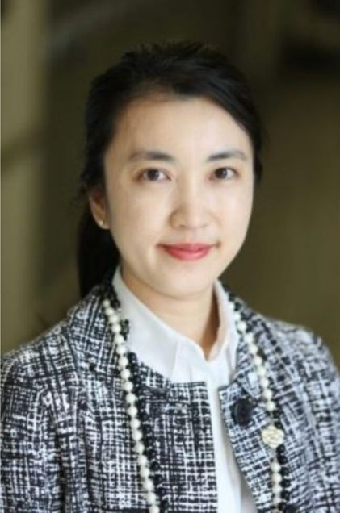
Julia TCW is a Principal Investigator at the TCW laboratory at Boston University (primary appointment at Pharmacology and Experimental Therapeutics). She received a Ph.D. and A.M. in Molecular and Cellular Biology from Harvard University with a Biophysics training background and research studies in induced pluripotent stem cell (iPSC) reprogramming in the Department of Stem Cell and Regenerative Biology. She then perused her postdoctoral research in the Department of Neuroscience, Ronald M. Loeb Center for Alzheimer’s Disease, Department of Genetics and Genomic Sciences at Icahn School of Medicine at Mount Sinai, New York with a research focus of the development of iPSC models and study Alzheimer’s disease (AD) genetics. Outside of the lab, she enjoys various sports activities including skiing, snowboarding, speed skating during winter and basketball, swimming, golfing, hiking, and horseback riding for the rest of the season.
Lab/Project Manager
Tony Tuck
Going to school and growing up in Boston as a teenager, having the opportunity to travel the world twice, in tour buses, cars, trains, and planes. I was able to return to Boston and settle down long enough to work with one of the world's giants that has been helping many families, hospitals, the military and so many different countries all over the world when needed the most. The American Red Cross is just one out of many great establishments I've been a part of, all have been great experiences. I also enjoy reading, playing sports, solving puzzles, going to the ski slopes, being outdoors and so much more.
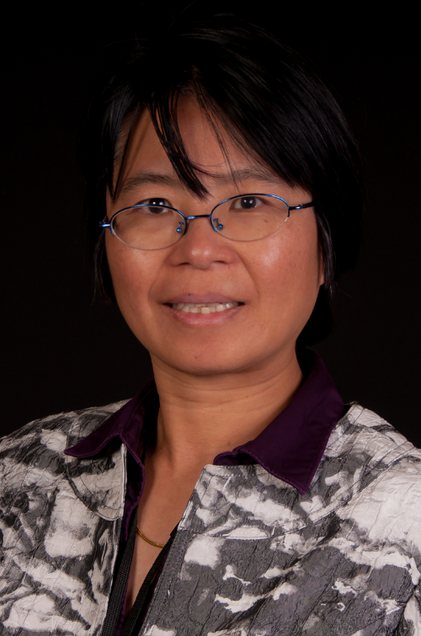
Yun Shen works as a Scientific Programmer Analyst at Boston University (IS&T Research Computing Services group). She grew up in Southeast China and received her B.S. and M.S. from Tsinghua University. She also got an M.S. from Boston University. She has worked primarily as a researcher and software developer in the past. She shifted a bit to the bioinformatics field since her last job at Dana-Farber Cancer Institute where she mainly focused on supporting and developing software utilities and pipelines for a nationally renowned cancer research center. Yun had been exposed to various programming languages including R and Perl. She has also working experience with MySQL databases. Outside work, Yun is a dedicated wife and mother, and a Christian believer. She spent a decent amount of her time and energy participating and volunteering in various community activities. Yun loves reading and making friends with people.
Dry/Computational lab
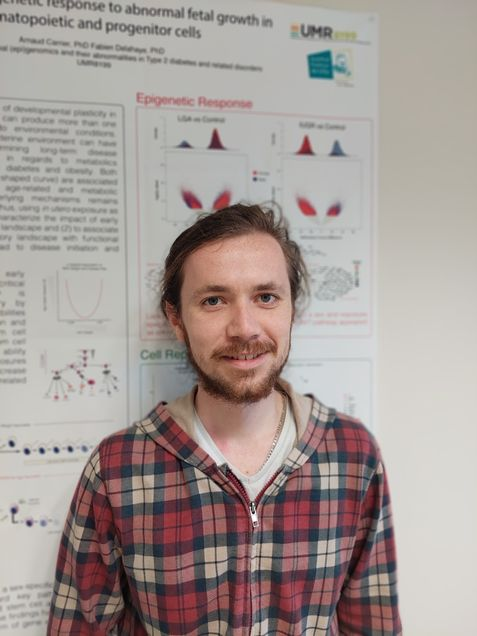
Alexandre Pelletier grew up in France. After obtaining a Master’s degree in genetics, genomics, and system biology, he earned a Ph.D. in functional epigenomics and computational biology in Lille (France), where he studied age-related disease mechanisms using single-cell and epigenetics data. He will now take part in TCW lab as a dry lab postdoctoral researcher and focus on better understanding genetics and epigenetics susceptibilities of Alzheimer’s disease using single-cell genomics and integrative approaches. Outside of the lab, Alexandre loves sports, backpacking trips, hiking, and playing theater.
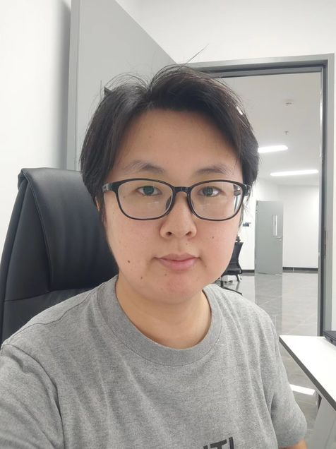
Pengjiao Wang grew up in China and graduated from Peking Union Medical College with a Ph.D. in Pathology. Her research focused on genomic alterations in cancer. After graduation, she primarily worked as a bioinformatics scientist in a hospital and pharmaceutical companies in Shanghai, China, gaining multi-omics data analysis experience in Alzheimer's disease and other neurodegenerative disorders. Currently, she is a postdoctoral researcher in Dr. TCW's lab, where she applies computational methods to address problems related to Alzheimer's disease, which aligns with her career interests. Outside of her career, she enjoys spending time with her cats, hiking and practicing Zen meditation.
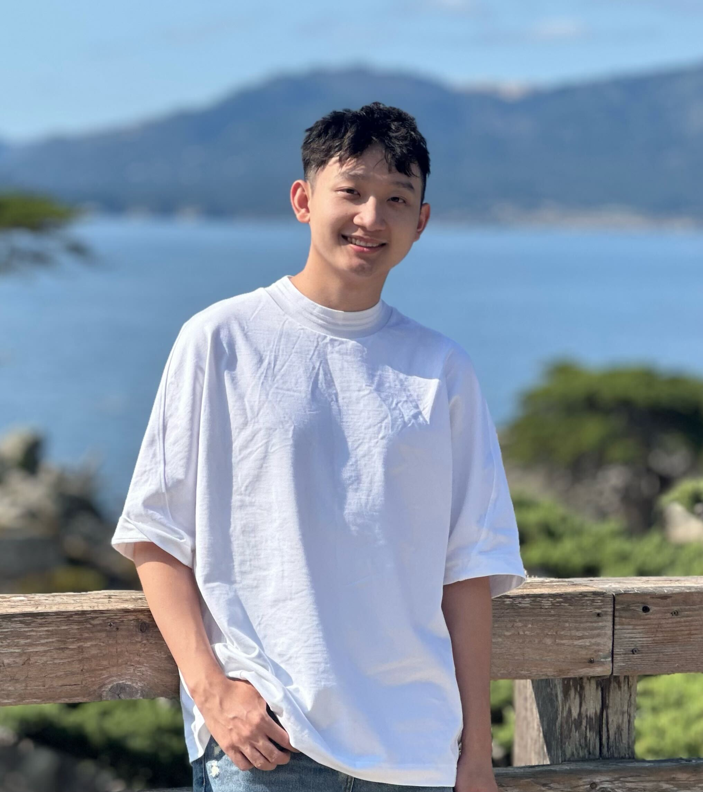
Yijun Luo grew up in China and graduated from Johns Hopkins University with a M.S. in Bioinformatics. He has a strong background in computational biology, with research experience in molecular dynamics simulations, gene expression profiling, and transcription factor binding site prediction using machine learning. He is excited to join the TCW lab to contribute to Alzheimer’s disease research by integrating multi-omics and single-cell data, while further developing his computational and translational research skills. In his free time, Yijun enjoys exploring new restaurants and hiking.
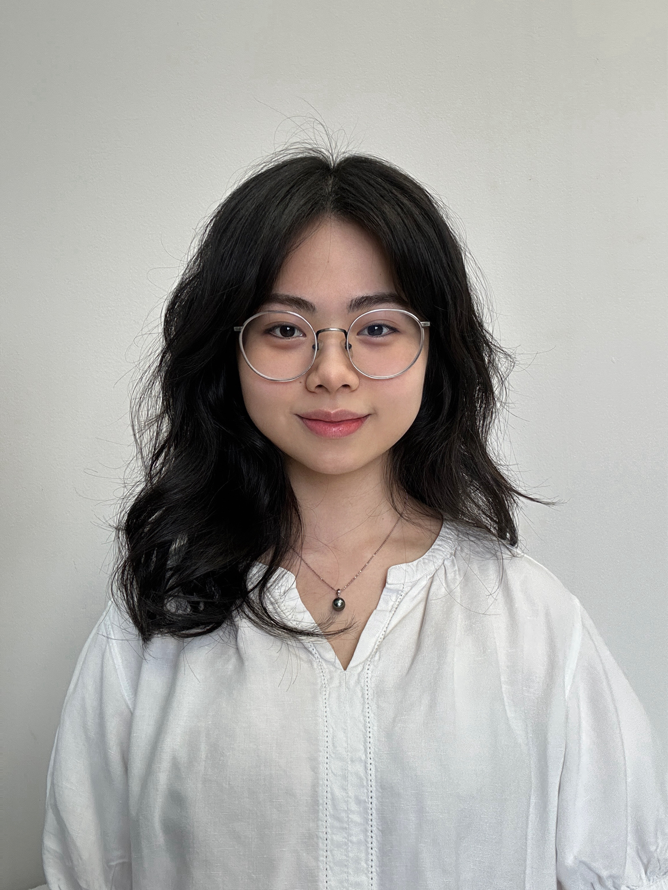
Wendy Bui grew up in Vietnam and is currently pursuing an M.S. in Bioinformatics at Boston University. She is interested in applying computational genomics to the study of neurodegenerative diseases, particularly Alzheimer’s disease. She is especially intrigued by prion biology and how protein misfolding and propagation contribute to neurodegeneration. She joined the TCW lab and is excited to gain hands-on experience in bioinformatics analysis and to learn integrative approaches in neurogenetics. In her spare time, she enjoys reading, watching movies, and playing games.
Wet/Bench lab
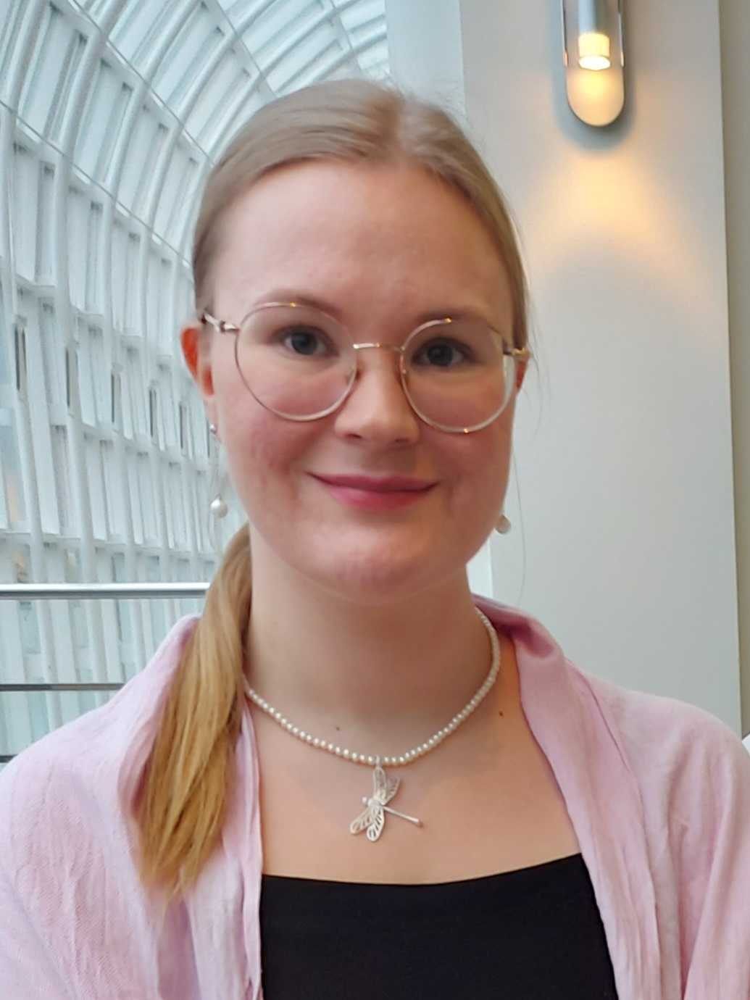
Margareta Kurkela grew up in Finland. She received her Bachelor’s degree in Biochemistry from the University of Oulu, and Master’s degree in Molecular Medicine from the University of Oulu and University of Ulm in Germany. After that she returned to Finland to pursue a Ph.D. in Biochemistry and Molecular Medicine in University of Oulu, where she studied the effect of chronic hypoxia and stabilization in neurological diseases such as Alzheimer’s disease and Refsum disease using enzyme kinetics, cell culture and transgenic mice in her projects. She is now joining the TCW lab as a postdoctoral researcher to investigate the APOE focused therapeutic approaches focusing on microglia in Alzheimer’s disease. Outside of the lab, Margareta enjoys baking, reading and exploring nature by hiking and trekking.
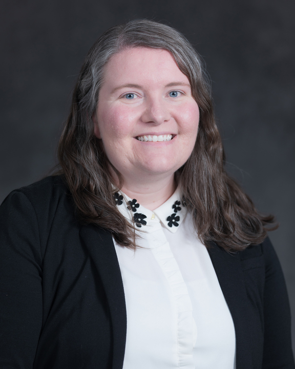
Nicole West grew up in Ohio where she received a Bachelor's degree in Biochemistry and Molecular Biology from the College of Wooster. She then received a Master's degree and PhD in Cellular and Molecular Biology from the University of Wisconsin-Madison. During her graduate work at UW-Madison, she studied cellular and molecular drivers underlying the early degeneration of cholinergic neurons in individuals with Down syndrome (trisomy 21). As a postdoctoral researcher in the TCW laboratory, she will be investigating how trisomy 21 alters lipid metabolism in glia and contributes to neuroinflammation and the progression of Alzheimer's disease in Down syndrome. In her free time, Nicole enjoys camping, hiking, playing volleyball, reading, and hanging out with her dog, Sophie.
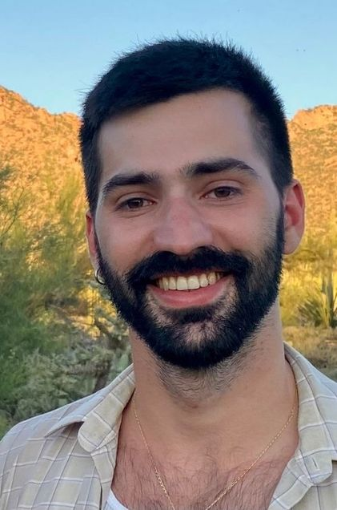
Juao-Guilherme Rosa grew up in the Boston area and later moved to the Twin Cities to attend Macalester College, receiving a B.A. in Neuroscience. After graduating, he joined the Marija Cvetanovic lab at the University of Minnesota, where he studied the role of glia in mouse models of the neurodegenerative disease SCA1. Now at Boston University, he is excited to explore the contribution of glia to the development and progression of AD. In addition to his passion for research, Juao-Guilherme loves cycling, board games, churrasco, and his two kittens.
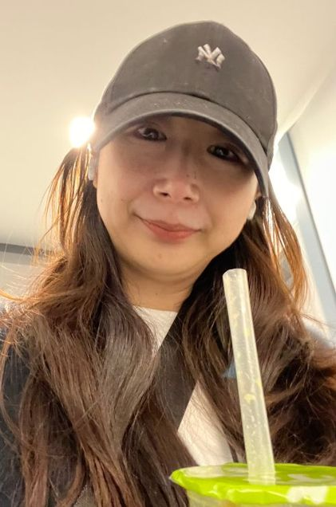
Lu Qian was born and raised in China and is currently a PhD student in Pharmacology at BU. Prior to joining the TCW lab, she worked at Icahn School of Medicine as an associate researcher and studied Alzheimer’s disease by leveraging human iPSC-derived brain cell models. After that, she joined Roche in Shanghai for early drug discovery in inflammatory bowel disease (IBD). Lu is excited to continue her mechanistic research in neurodegeneration and explore more AD genetics. Outside of work, she enjoys snowboarding, kendo, and suspension thrillers.
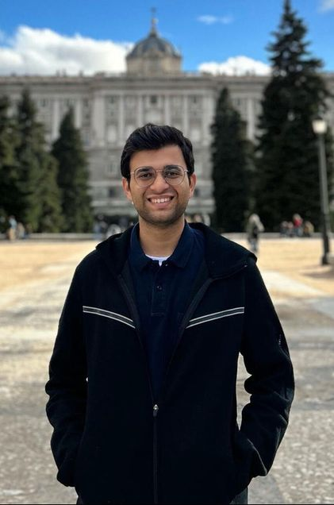
Rachit Shah, a native of Mumbai, India, holds an MBBS degree from Rajiv Gandhi Medical College, Thane. He has previously interned at the Indian Institute of Science, where his work involved super-resolution microscopy, focusing on the role of stress granules in senescent HeLa cells. He also represented India in a research exchange program in Portugal, where he explored Age-Related Macular Degeneration, with an emphasis on the role of extracellular vesicles. He is set to join the TCW laboratory as a Visiting Research Fellow. In his personal time, he plays badminton and table tennis and enjoys reading comics.
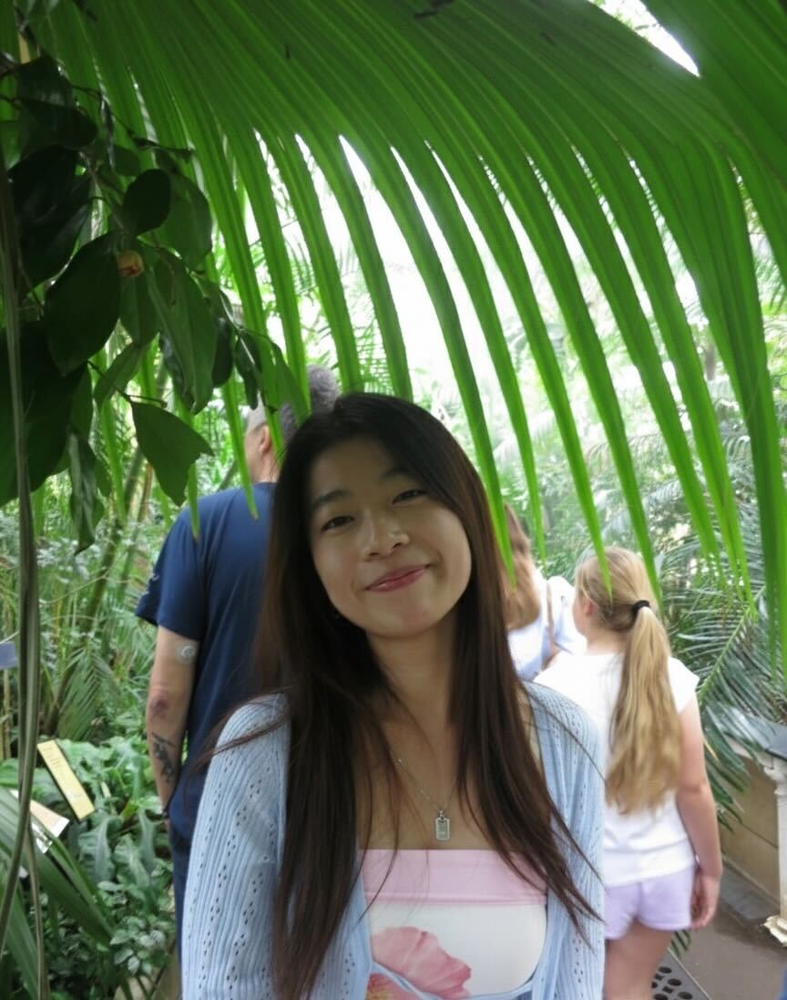
Selina Chen is from New York City and is currently studying Biochemistry & Molecular Biology at Boston University. She joined the TCW Lab in 2025 and is excited to learn more about Alzheimer’s Disease genetics. Outside of school, she enjoys running, biking, and exploring nature.
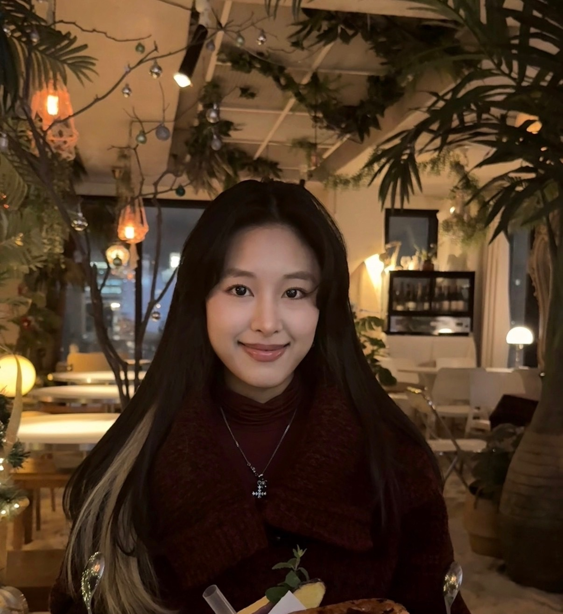
Eileen Park is a sophomore majoring in Neuroscience at BU. She is originally from Seoul but grew up moving between the US and Korea. She is thrilled to join the TCW lab this summer and learn more about iPSC research. Outside of the lab, you can usually find her at the rink figure skating.
Alumni
Lab Alumni
Former TCW Lab members and trainees whose work helped build the lab's wet-lab, dry-lab, and translational research programs.

Deepti Murthy
Single-cell sequencing analysis; departed for San Diego to pursue a Ph.D. in bioinformatics.
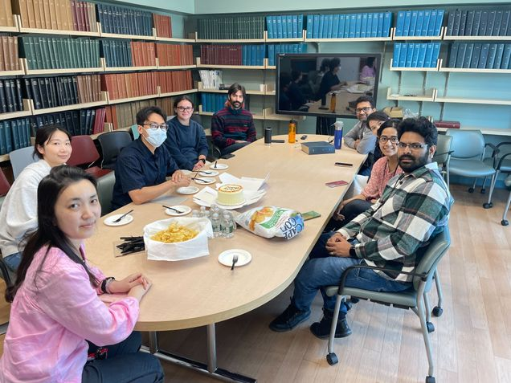
Rufuto Rahman
Specialized in CRISPR-Cas9 based gene editing and wet-lab model systems.
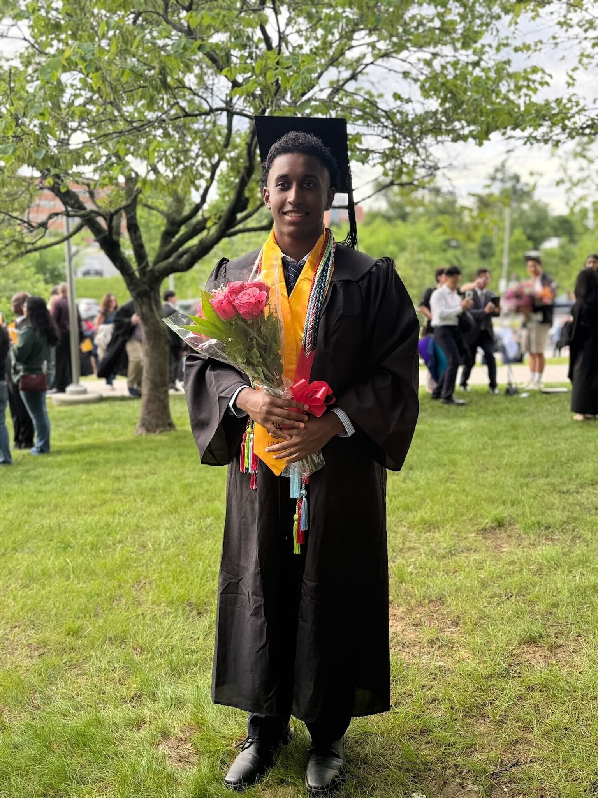
Emmanuel Mekasha
TCW Lab undergraduate researcher and the lab's second undergraduate student to graduate.
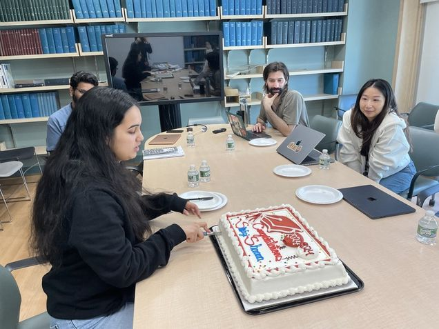
Swastika Sharma
BU graduate who continued her next chapter at Brigham and Women's Hospital.
Muzhou Wu
Former TCW Lab member and part of the lab's alumni community.
Rong Huang
Former TCW Lab member and part of the lab's alumni community.
Susanna Pompi
Former TCW Lab member and part of the lab's alumni community.
Lucrezia Floro
Former TCW Lab member and part of the lab's alumni community.
Baoquin Fei
Former TCW Lab member and part of the lab's alumni community.
Shaoning Peng
Former TCW Lab member and part of the lab's alumni community.